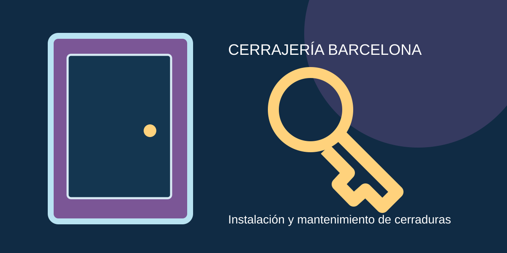

Cómo proteger un trastero | Blog de cerrajería

Fecha editorial: 2025-11-10 · Guía de cerrajería
Cómo proteger un trastero es una cuestión frecuente al revisar la seguridad de una vivienda o un local. Esta guía explica criterios prácticos para tomar decisiones informadas sin dañar los mecanismos.
Primero: identificar el problema
Observa si la llave entra y gira con normalidad, si la puerta roza el marco y si el cierre se bloquea solo en determinadas posiciones. No es lo mismo un bombín deteriorado que un problema de alineación. Evita pruebas que puedan romper la llave o el mecanismo.
Qué opciones conviene comparar
La reparación puede resultar adecuada si el mecanismo está en buen estado y el problema es puntual. La sustitución es más razonable cuando existe desgaste, pérdida de control de copias o necesidad de elevar el nivel de seguridad. Comprueba siempre compatibilidad y garantías.
Seguridad y presupuesto
Antes de contratar, solicita el precio estimado con desplazamiento, materiales, mano de obra e impuestos. Para una urgencia, explica el tipo de puerta y el estado del cierre. Pide identificación profesional y una factura detallada.
Conclusión práctica
Un mantenimiento cuidadoso y una revisión temprana pueden reducir incidencias. Si el problema persiste, no fuerces la puerta y consulta con un profesional. Puedes ampliar información en nuestras páginas de cambio de cerraduras y apertura de puertas.